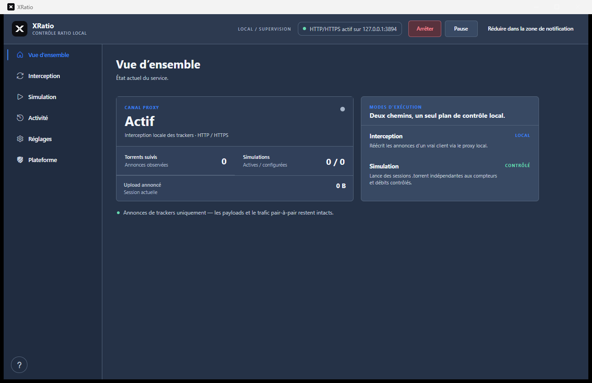

Interception.
Keep your client. Adjust what it reports. XRatio’s local proxy lets you change upload and download counters sent to trackers, while your client takes care of the files.
XRatio for Windows
Tracker interception. Torrent simulation. One native Windows app.
Free and open source.
The real app. Click to take a closer look.
Meet XRatio.
Keep your client. Adjust what it reports. XRatio’s local proxy lets you change upload and download counters sent to trackers, while your client takes care of the files.
A session of your own. Open a .torrent, choose a client profile and set your speeds. Send controlled tracker announces, without transferring the actual files.
At home on your desktop. Four themes. Live activity. Tray controls. All the essentials, right where you need them.
See the documentationTake the controls.
Start the demo, adjust the upload speed, and follow each announce from XRatio to an example tracker account.
Interactive illustration · accelerated time · no connection to any tracker
Ready to send the first example announce.
Ratio = uploaded ÷ downloaded. This example starts at 4 GB / 10 GB. One second represents one minute; the example tracker refreshes every 2.5 seconds. Actual update timing and accepted statistics depend on the tracker.
A closer look.
Your tracker receives counters through announces. XRatio gives you a view of those messages, separately from the transfer of your files.
Interception uses your existing client. Simulation creates independent announces without transferring files.
Your desktop. Your way.
Check the proxy at a glance. Follow events in Activity. Choose a theme and keep the app close in the system tray.
Explore the interface
From here to your desktop.
Get the self-contained Windows executable. No separate runtime to install.
Connect your client to the proxy, or load a .torrent for an independent simulation.
Use the guide to check your setup, then inspect the first announce and its counters.
Download. Open. You’re ready.
Get XRatio for Windows Windows x64. No separate .NET installation. Release notes and checksums ↗